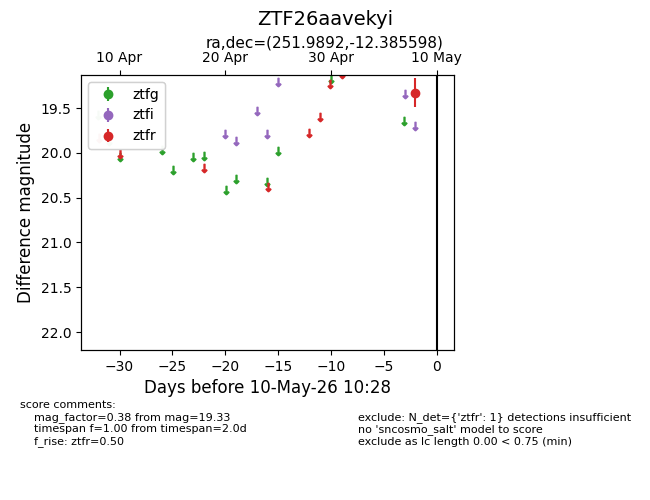
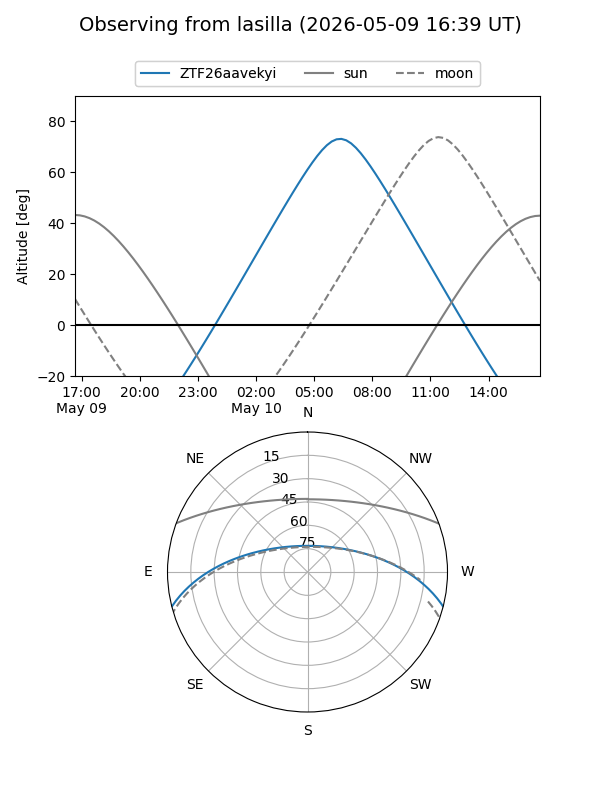
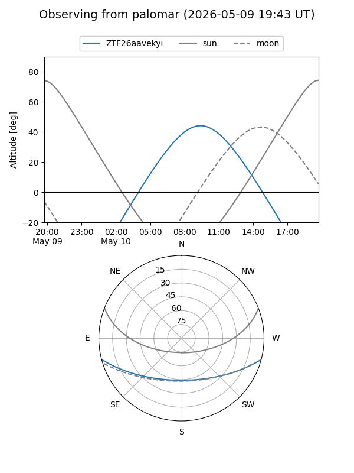
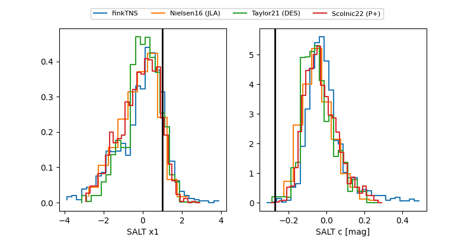

ZTF26aavekyi
Target ZTF26aavekyi at 2026-05-10 10:29
Aliases and brokers:
FINK: link
Lasair: link
ALeRCE: link
alt names
ZTF26aavekyi (ztf,fink_ztf)
Coordinates:
equatorial (ra, dec) = 251.9892,-12.38560
equatorial (HMS+DMS) = 16:47:57.42,-12:23:08.15
galactic (l, b) = (6.3541,+20.37830)
Flags:
Photometry:
last ztfr=19.33
1 ztfr detections
Lightcurve

Visibility


Additional plots
